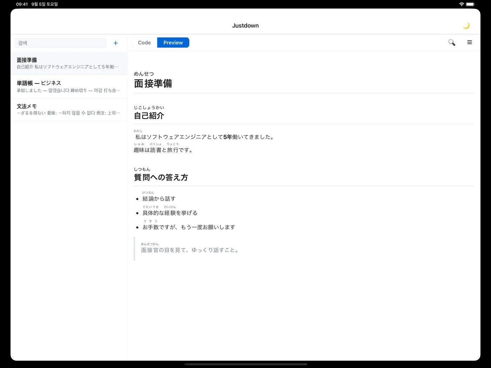

iPhone
Type it. Read it.
Two tabs. Code is what you write, Preview is what you study.


The note app for people learning Japanese.
Write the reading once. See it above the kanji, every time.
Free. No account. No ads. iPhone and iPad.

Furigana
Aozora Bunko notation in, real ruby text out. Tap あ to hide the readings and quiz yourself.
# 面接《めんせつ》の準備《じゅんび》 ## 自己紹介《じこしょうかい》 私《わたし》は3年間《ねんかん》、モバイルアプリを開発《かいはつ》してきました。 ## 想定質問《そうていしつもん》 - 長所《ちょうしょ》と短所《たんしょ》は？ - ｜挫折《ざせつ》した経験《けいけん》は？
自己紹介
私は3年間、モバイルアプリを開発してきました。
想定質問
Features
漢字《かんじ》 becomes a real ruby tag in the preview. Use ｜ to mark where the reading begins.
One tap hides every furigana in a note so you can test yourself. Each note remembers its own setting.
《 》 and ｜ are hard to type on a Japanese keyboard. One tap from the toolbar.
Tables, code blocks with highlighting, Code / Preview tabs, a table of contents from your headings.
Across all notes, or inside one — jumping between matches in both Code and Preview.
iPhone
Two tabs. Code is what you write, Preview is what you study.
Notation
Justdown uses the same furigana markup as Aozora Bunko, Japan's public-domain library. No lock-in — copy it anywhere.
| You type | You see |
|---|---|
漢字《かんじ》 | 漢字 |
お｜土産《みやげ》 | お土産 |
見《み》る | 見る |
<ruby>日本<rt>にほん</rt></ruby> | 日本 |
The reading goes right after the kanji in 《 》. When the kanji run starts mid-word, put ｜ before it so the reading attaches to the right characters. Inside code blocks nothing is converted.
The parser is open source as markdown-it-aozora-ruby, a markdown-it plugin you can use in your own project.
Privacy
Justdown has no server and never opens a network connection.
Open the app and write.
No analytics, no crash reporter.
Free, with nothing to upsell.
Notes live only in the app's storage.
No. You write the reading yourself in 《 》. That's deliberate — typing the reading is part of learning it, and it keeps the app fully offline.
Not yet. iCloud sync is the next planned feature.
Not at the moment. Justdown is iPhone and iPad only for now.
Notes are plain markdown. Copy from the Code tab and paste anywhere — the 《 》 notation reads fine on its own and works in Aozora Bunko-compatible readers.